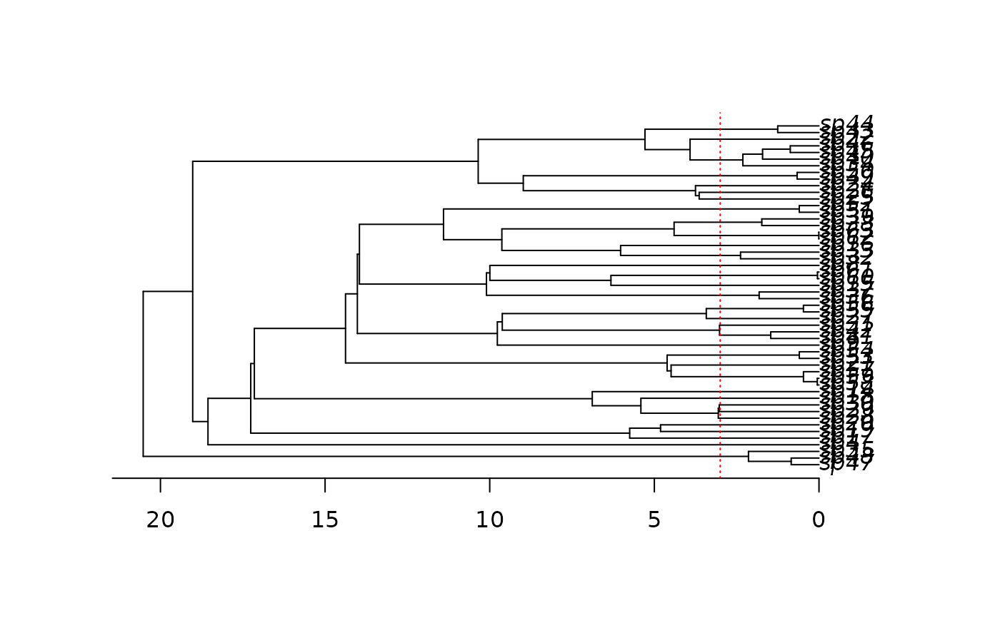

make.bisse.td.RdCreate a likelihood function for a BiSSE model where different chunks of time have different parameters. This code is experimental!
An ultrametric bifurcating phylogenetic tree, in
ape “phylo” format.
A vector of character states, each of which must be 0 or
1, or NA if the state is unknown. This vector must have
names that correspond to the tip labels in the phylogenetic tree
(tree$tip.label). For tips
corresponding to unresolved clades, the state should be NA.
Number of epochs. 1 corresponds to plain BiSSE, so this will generally be an integer at least 2.
A named character vector of functions of time. See details.
Unresolved clade information: see
make.bisse. (Currently this is not supported.)
Vector of length 2 with the estimated proportion of
extant species in state 0 and 1 that are included in the phylogeny.
See make.bisse.
The number of species modelled in unresolved clades (this is in addition to the largest observed clade).
The states vector is always checked to make sure
that the values are 0 and 1 only. If strict is TRUE
(the default), then the additional check is made that every
state is present. The likelihood models tend to be poorly behaved
where states are missing.
List of control parameters for the ODE solver. See
details in make.bisse.
Logical, indicating if functions should be truncated to zero when negative (rather than causing an error). May be scalar (applying to all functions) or a vector (of length 6).
List of data for spline-based time functions. See details
.
This builds a BiSSE likelihood function where different regions of time (epochs) have different parameter sets. By default, all parameters are free to vary between epochs, so some constraining will probably be required to get reasonable answers.
For n epochs, there are n-1 time points; the first
n-1 elements of the likelihood's parameter vector are these
points. These are measured from the present at time zero, with time
increasing towards the base of the tree. The rest of the parameter
vector are BiSSE parameters; the elements n:(n+6) are for the
first epoch (closest to the present), elements (n+7):(n+13) are
for the second epoch, and so on.
For make.bisse.t, the funtions is a vector of names of
functions of time.
For example, to have speciation rates be linear functions of
time, while the extinction and character change rates be constant with
respect to time, one can do
The functions here must have t as their first argument,
interpreted as time back from the present. Other possible functions
are "sigmoid.t", "stepf.t", "spline.t", "exp.t", and "spline.linear.t".
Unfortunately, documentation is still pending.
## Due to a change in sample() behaviour in newer R it is necessary to
## use an older algorithm to replicate the previous examples
if (getRversion() >= "3.6.0") {
RNGkind(sample.kind = "Rounding")
}
#> Warning: non-uniform 'Rounding' sampler used
set.seed(4)
pars <- c(0.1, 0.2, 0.03, 0.03, 0.01, 0.01)
phy <- tree.bisse(pars, max.t=30, x0=0)
## Suppose we want to see if diversification is different in the most
## recent 3 time units, compared with the rest of the tree (yes, this is
## a totally contrived example!):
plot(phy)
axisPhylo()
abline(v=max(branching.times(phy)) - 3, col="red", lty=3)

## For comparison, make a plain BiSSE likelihood function
lik.b <- make.bisse(phy, phy$tip.state)
## Create the time-dependent likelihood function. The final argument
## here is the number of 'epochs' that are allowed. Two epochs is one
## switch point.
lik.t <- make.bisse.td(phy, phy$tip.state, 2)
## The switch point is the first argument. The remaining 12 parameters
## are the BiSSE parameters, with the first 6 being the most recent
## epoch.
argnames(lik.t)
#> [1] "t.1" "lambda0.1" "lambda1.1" "mu0.1" "mu1.1" "q01.1"
#> [7] "q10.1" "lambda0.2" "lambda1.2" "mu0.2" "mu1.2" "q01.2"
#> [13] "q10.2"
pars.t <- c(3, pars, pars)
names(pars.t) <- argnames(lik.t)
## Calculations are identical to a reasonable tolerance:
lik.b(pars) - lik.t(pars.t)
#> [1] -2.052648e-07
## It will often be useful to constrain the time as a fixed quantity.
lik.t2 <- constrain(lik.t, t.1 ~ 3)
## Parameter estimation under maximum likelihood. This is marked "don't
## run" because the time-dependent fit takes a few minutes.
if (FALSE) {
## Fit the BiSSE ML model
fit.b <- find.mle(lik.b, pars)
## And fit the BiSSE/td model
fit.t <- find.mle(lik.t2, pars.t[argnames(lik.t2)],
control=list(maxit=20000))
## Compare these two fits with a likelihood ratio test (lik.t2 is nested
## within lik.b)
anova(fit.b, td=fit.t)
}
## The time varying model (bisse.t) is more general, but substantially
## slower. Here, I will show that the two functions are equivalent for
## step function models. We'll constrain all the non-lambda parameters
## to be the same over a time-switch at t=5. This leaves 8 parameters.
lik.td <- make.bisse.td(phy, phy$tip.state, 2)
lik.td2 <- constrain(lik.td, t.1 ~ 5,
mu0.2 ~ mu0.1, mu1.2 ~ mu1.1,
q01.2 ~ q01.1, q10.2 ~ q10.1)
lik.t <- make.bisse.t(phy, phy$tip.state,
rep(c("stepf.t", "constant.t"), c(2, 4)))
lik.t2 <- constrain(lik.t, lambda0.tc ~ 5, lambda1.tc ~ 5)
## Note that the argument names for these functions are different from
## one another. This reflects different ways that the functions will
## tend to be used, but is potentially confusing here.
argnames(lik.td2)
#> [1] "lambda0.1" "lambda1.1" "mu0.1" "mu1.1" "q01.1" "q10.1"
#> [7] "lambda0.2" "lambda1.2"
argnames(lik.t2)
#> [1] "lambda0.y0" "lambda0.y1" "lambda1.y0" "lambda1.y1" "mu0"
#> [6] "mu1" "q01" "q10"
## First, evaluate the functions with no time effect and check that they
## are the same as the base BiSSE model
p.td <- c(pars, pars[1:2])
p.t <- pars[c(1, 1, 2, 2, 3:6)]
## All agree:
lik.b(pars) # -159.7128
#> [1] -159.71
lik.td2(p.td) # -159.7128
#> [1] -159.71
lik.t2(p.t) # -159.7128
#> [1] -159.71
## In fact, the time-varying BiSSE will tend to be identical to plain
## BiSSE where the functions to not change:
lik.b(pars) - lik.t2(p.t)
#> [1] 0
## Slight numerical differences are typical for the time-chunk BiSSE,
## because it forces the integration to be carried out more carefully
## around the switch point.
lik.b(pars) - lik.td2(p.td)
#> [1] -2.52191e-07
## Next, evaluate the functions with a time effect (5 time units ago,
## speciation rates were twice the contemporary rate)
p.td2 <- c(pars, pars[1:2]*2)
p.t2 <- c(pars[1], pars[1]*2, pars[2], pars[2]*2, pars[3:6])
## Huge drop in the likelihood (from -159.7128 to -172.7874)
lik.b(pars)
#> [1] -159.71
lik.td2(p.td2)
#> [1] -172.7696
lik.t2(p.t2)
#> [1] -172.7696
## The small difference remains between the two approaches, but they are
## basically the same.
lik.td2(p.td2) - lik.t2(p.t2)
#> [1] 1.564434e-05
## There is a small time cost to both time-dependent methods,
## heavily paid for the time-chunk case:
system.time(lik.b(pars))
#> user system elapsed
#> 0.003 0.000 0.003
system.time(lik.td2(p.td)) # 1.9x slower than plain BiSSE
#> user system elapsed
#> 0.004 0.000 0.004
system.time(lik.td2(p.td2)) # 1.9x slower than plain BiSSE
#> user system elapsed
#> 0.005 0.000 0.005
system.time(lik.t2(p.t)) # about the same speed
#> user system elapsed
#> 0.004 0.000 0.004
system.time(lik.t2(p.t2)) # about the same speed
#> user system elapsed
#> 0.004 0.000 0.004